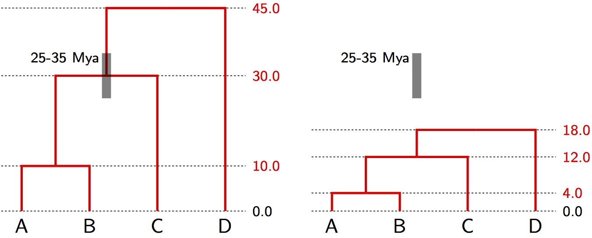
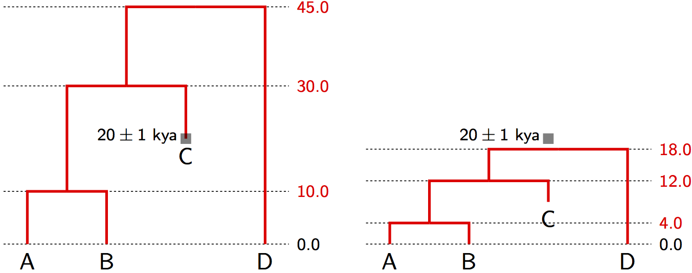

Tree space

- A two-dimensional space representing all
possible time-trees for the topology ((1,2),3).
- x and y, are the two inter-coalescent intervals($t_{root} = x + y$).
- Three trees are displayed, with their arithmetic mean tree.
- Dashed lines show the shortest distances to mean (i.e. deviations from the mean).
Tree space

- The simplest non-trivial tree space for time-trees ($n=3$)
- Each non-degenerate tree topology is a two-dimensional space.
- These subspaces meet at a shared edge representing the star
tree, which is a one-dimensional subspace (parameter is the age of the root)
- Dashed lines are shortest distances between the four displayed trees.
Another space of tip-labeled time-trees

Projection of tree space on 4 taxa

This is a projection of a part of 4-taxa tree space. The full number of subspaces is actually 18, but we only show 6 of them here. Also each subspace is actually a cube, but we show them as squares by fixing the tip-most interval.
Tree space
- Tree space is a complex space made up of a subspace for each tree topology.
- For time trees of $n$ taxa each subspace is positive $R^{n-1}$ or an $(n-1)$-dimensional simplex, depending on the parameterization.
- Tree space has a combinatorial component that can be described by a graph whose vertices are distinct tree topologies and whose edges connect topologies whose subspaces share a face.
- Tree space can be explored by random walks on the graph connecting tree topologies, but also by larger jumps like subtree-prune-and-regraft (SPR).
- The continuous component of tree space describe the divergence times on each tree must also be explored in Bayesian phylogenetic inference.
Genetic distance = rate $\times$ time
The strict molecular clock parameterization

The "substitution tree" is in units of expected substitutions, i.e. genetic distances.
Non-identifiability of rate and time

Identifiability via node calibrations
Suppose fossil evidence shows the common ancestor of species A, B and C lived 25-35 Mya.

With a strict molecular clock, only the age (range) of a single node in the tree is needed in order to
interpolate and extrapolate the ages of all other divergence times.
Once a known node age like this "calibrates" the tree, the
genetic distances can be separated into an absolute rate and divergence times.
Identifiability via leaf calibrations
Suppose sample C is ancient DNA from subfossil remains dated to 20 thousand years ago.

With a strict molecular clock, calibration is possible with data from non-contemporaneous taxa (e.g. ancient DNA, or samples from different years in a rapidly evolving virus).
Again, once one or more non-contemporaneous leaf nodes like this "calibrate" the time scale of the tree, the
genetic distances can be separated into an absolute rate and divergence times.
Genetic distance = rate $\times$ time
The relaxed molecular clock parameterization

The "substitution tree" is in units of expected substitutions, i.e. genetic distances.
Genetic distance = rate $\times$ time
The relaxed molecular clock parameterization

The "substitution tree" is in units of expected substitutions, i.e. genetic distances.
Non-identifiability of rate and time

Bayesian phylogenetic posterior with a molecular clock
Strict molecular clock:
$$T = \color{darkgreen}{\mu} \times \color{red}{g}$$
$$P(\color{red}{g}, \color{darkgreen}{\mu}, \theta|D) = \frac{1}{\Pr(D)}\Pr(D|T)P(\color{red}{g}|\theta)P(\color{darkgreen}{\mu})P(\theta)$$
Relaxed molecular clock:
$$T = \color{darkgreen}{\vec{\mu}} \star \color{red}{g}$$
$$P(\color{red}{g}, \color{darkgreen}{\vec{\mu}},\theta|D) = \frac{1}{\Pr(D)}\Pr(D|T)P(\color{red}{g}|\theta)P(\color{darkgreen}{\vec{\mu}})P(\theta)$$
- where $P(\color{darkgreen}{\vec{\mu}})$ is the (model-based) prior for how much rate variation you allow.
- The phylogenetic likelihood only depends on the substitution tree $T$: $\Pr(D|T)$.
- The tree prior only depends on the time-tree $\color{red}{g}$: $P(\color{red}{g}|\theta)$.
- By fixing $\color{darkgreen}{\vec{\mu}} = 1$ we get a time-tree ($\color{red}{g}$) in units of substitutions (i.e. genetic distance).
How many parameters are in each of these models?
Unrooted tree, no molecular clock constraint
- unrooted substitution tree $T$ has $2n-3$ random variables, one for each branch length
Strict molecular clock:
- $\color{red}{g}$ has $n-1$ random variables, one for the age of each internal node.
- $\color{darkgreen}{\mu}$ is a one-dimensional parameter
- total of $n$ dimensions
Relaxed molecular clock:
- $\color{red}{g}$ has $n-1$ random variables, one for the age of each internal node.
- $\color{darkgreen}{\vec{\mu}}$ contains $2n-2$ rate parameters
- total of $3n-3$ dimensions
- Only identifiable by priors on rates and times: $P(\color{darkgreen}{\vec{\mu}})$, $P(\color{red}{g}|\theta)$
What models of rate variation should we consider?
Autocorrelated models of rate variation assume the rate evolves down the tree:
$$P(\color{darkgreen}{\vec{\mu}}) = \prod_i P(\mu_i | \mu_{\text{parent}(i)})$$
e.g. $\text{log}(\mu_i) \sim \text{Normal}(\text{log}(\mu_{\text{parent}(i)}), \sigma t_i)$, where $t_i$ is the length of time separating the $i$'th node and its parent in the time tree and $\sigma$ is the rate of evolution of the rate of evolution per unit time in log space.
Uncorrelated models of rate variation assume each branch has a rate drawn independently from a distribution
$$P(\color{darkgreen}{\vec{\mu}}) = \prod_i P(\mu_i | \nu)$$
where $\nu$ are parameters of the distribution they are drawn from, e.g. $\text{log}(\mu_i) \sim \text{Normal}(M, S)$, where $M$ is the mean of the log rate and $S$ is the standard deviation of the log-rate.